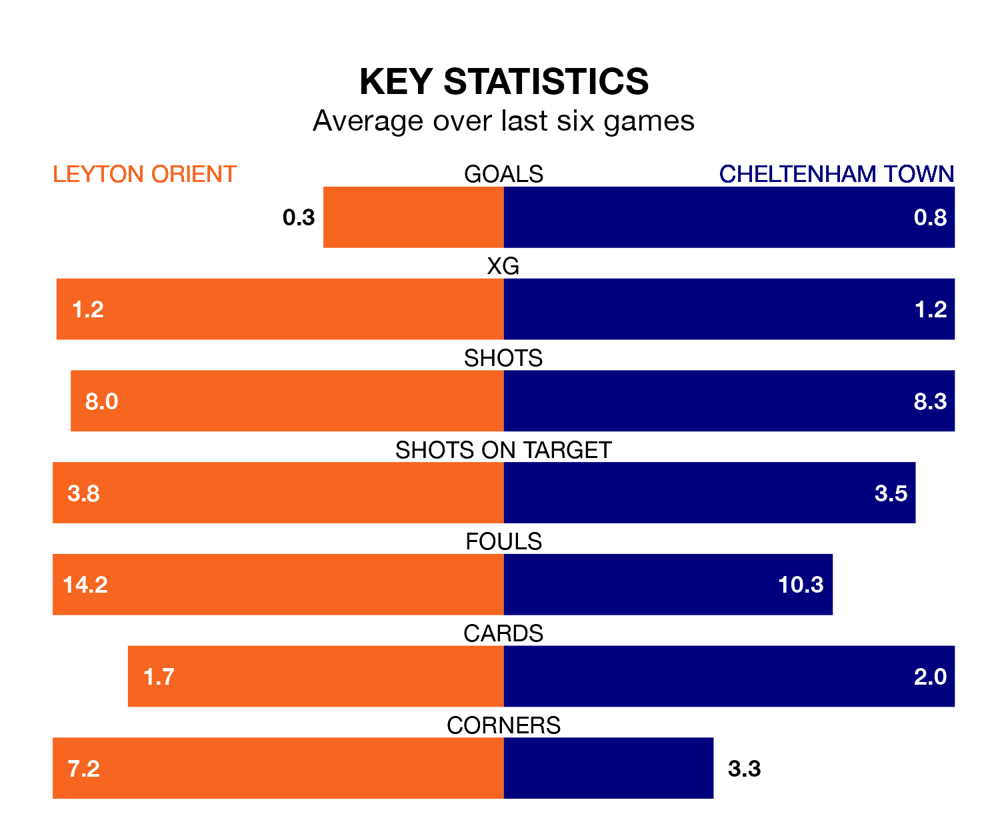

Leyton Orient are on a poor run ahead of hosting Cheltenham Town at Brisbane Road on Saturday, with just four points collected from their last six games.
Orient have picked up one win and one draw in their last six EFL League One games, and face a Robins side whose last six games have brought one win and two draws.
Cheltenham are 22nd in the table after 39 games, of which they have won 10 and drawn eight, earning 38 points.
Orient are 11 places ahead of Town in 11th, with 16 wins and 10 draws putting them on 58 points.
In the last 10 years, Orient and Cheltenham have played each other on seven occasions. Orient won two of them, Cheltenham four, and they drew once.
On average, Orient scored 0.7 goals and the Robins 1.1 in those matches.
Their last meeting was on December 16, when Orient won 2-1 away.
With 33 goals in 39 games so far this season, the Robins are the league's joint-third-lowest scorers with 0.8 goals per game. And they are conceding more than average, letting in 53 goals at a rate of 1.4 per game.
The hosts are also below average scorers, with 1.1 goals per game, compared to a league average of 1.3. They have also conceded 1.1 goals per game.
Orient's last match was on Monday, a 2-1 loss against Peterborough United, with Ethan Stuart William Galbraith getting the goal for Orient.
Cheltenham lost 2-1 against Exeter City last time out, also on Monday, with Benjamin Williams on the scoresheet.
Saturday's match will be refereed by Simon Mather, who has taken charge of 14 EFL League One games so far this season, issuing seven red cards and booking 74 players. He has awarded two penalties.
The last Orient game Mather refereed was a 1-0 away loss to Fleetwood Town on September 30. His last Cheltenham match was their 2-1 win at home against Portsmouth on January 6.
Updated: 16:41 (UTC), 04/04/24